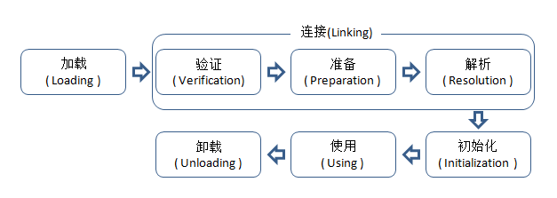
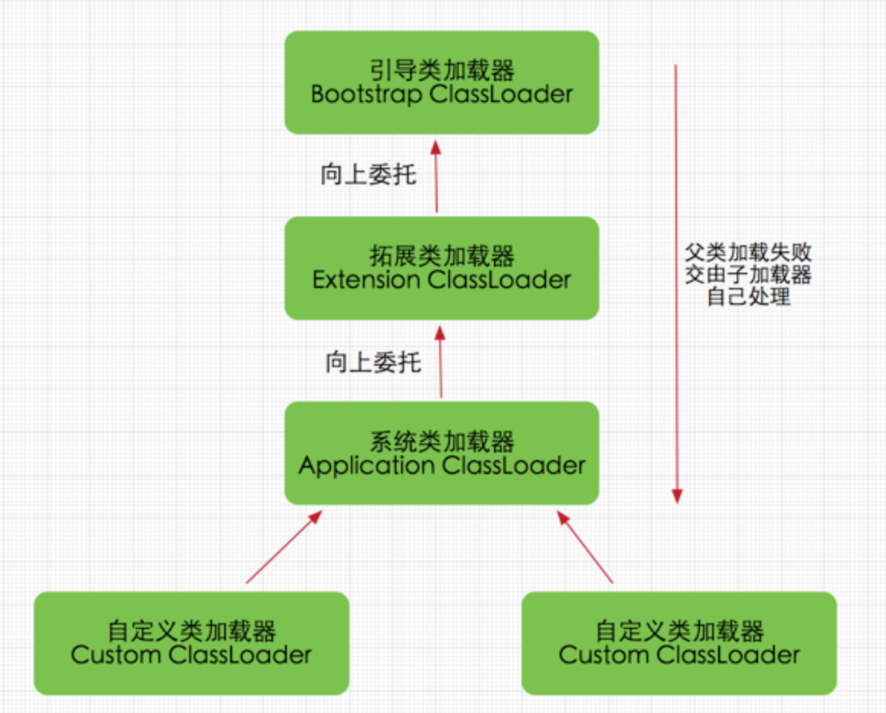
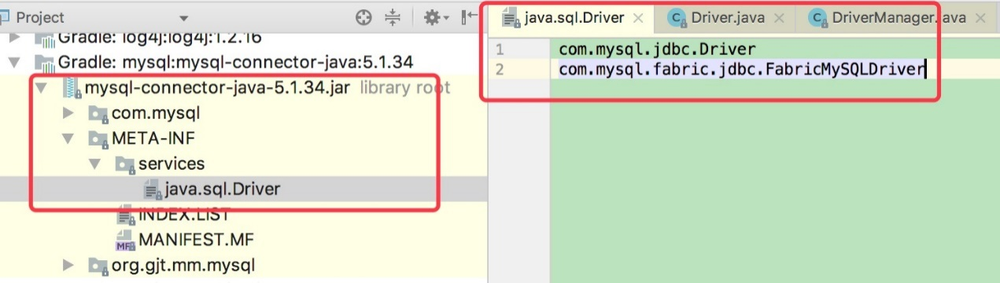

章节
类加载的时机
类从被加载到虚拟机内存开始，到卸载出内存，整个生命周期分为：加载（loading）、验证（verification）、准备（preparation）、解析（resolution）、初始化（initialization）、使用（using）、卸载（unloading）7个阶段，其中验证、准备、解析统称连接（Linking）。
虚拟机严格规定有且只有5中情况必须立即对类进行”初始化”：
-
遇到new、getstaic、putstatic或者invokestatic这四个字节码指令，如果类没有初始化，则需要先触发其初始化。场景为：使用new关键字实例化对象时、读取或设置一个类的静态字段时（被final修饰、已在编译期把结果放入常量池的静态字段除外）、以及调用类的静态方法时。
-
使用java.lang.reflect包的方法对类进行反射调用的时候
-
初始化类时，先触发父类的初始化
-
当虚拟机启动时，它会先初始化指定的主类（有main方法的类）
-
当使用JDK1.7的动态语言支持时，如果一个java.lang.invoke.MethodHandle实例最后的解析结果是REF_getStatic、REF_putStatic、REF_invokeStatic的方法句柄，并这个方法的句柄所对应的类没有实例化。
加载过程如下：
{width=”5.768055555555556in” height=”2.051388888888889in”}
- 加载
获取类的二进制流，转化为方法区的运行时数据结构，在内存中生成一个代表这个类的java.lang.Class对象，作为方法区这个类的各种数据的访问入口
- 验证
确保class文件字节流的信息符合虚拟机要求
-
文件格式验证
-
元数据验证
-
字节码验证
-
符号引用验证
<!-- --
- 准备
为类变量分配内存并设置初始值，变量使用的内存都在方法区。例如（static int value=123）在这个阶段会被初始化为0，把value赋值运算的putstatic指令编译后放在了<clinit\方法中，所以初始化阶段才会将value赋值为123。但如果value修饰为static final，则准备阶段就会赋值为123。
-
解析
-
初始化
<clinit()方法是由编译器收集类变量的赋值动作和静态语句块合并产生的，如果两个都没有，则不生成该方法。它不需要显示调用父类构造器，虚拟机自动执行（<init\不会）。父类的<clinit\先执行，所以父类的静态语句要优先于子类。但接口不需要执行父类的<clinit\方法。接口的实现和子接口在初始化时，接口都不会被初始化，除非调用了变量。（接口没有静态方法块）。虚拟机用锁保证了<clinit\的多线程安全，有阻塞的可能。
类加载器
比较两个类是否”相等”，只有在这两个类是由同一个类加载器加载的前提下才有意义。这里的”相等”包括类的Class对象的equals()方法、isAssignableFrom()方法、isInstance()方法的返回结果，也包括使用instanceof关键字做对象所属关系判定等情况。
类加载器：
- 启动器加载器（Bootstrap classLoader）
这个类加载器负责加载java_home\lib目录中的jar，或者被-Xbootclasspath参数所指定的路径的，如果需要把加载请求委派给它，直接使用null代替
- 扩展类加载器（Extension ClassLoader）
这个加载器由sun.misc.Launcher$ExtClassLoader实现，它负责加载java_home\lib\ext目录中的，或者被java.ext.dirs系统变量指定路径的所有类库
- 应用程序类加载器（Application ClassLoader）或系统加载器
这个类加载器有sun.misc.Launcher$AppClassLoader实现，负责加载用户类路径（ClassPath）上所指定的类库。它是ClassLoader中的getSystemClassLoader()方法的返回值，所以也叫系统加载器，通常就是程序的默认加载器。
{width=”3.9227263779527557in” height=”3.16in”}
图中这种关系被称为类加载器的双亲委派模型，除了bootstrap classloader其他的类加载器都有自己的父类加载器。父子关系不是用继承，而是组合的方式复用父类加载器的代码。
它的工作过程是：如果有一个类加载器收到了类加载的请求，它首先不自己加载这个类，而是委托给父类去加载，每个层次的类加载都是如此，只有父加载器反馈自己无法完成加载请求（它的搜索范围没有找到这个类），子加载器才会自己加载。
+———————————————————————-+ | protected synchronized Class<?\ loadClass(String name,boolean | | resolve) throws ClassNotFoundException { | | | | Class c = findLoaderClass(name); | | | | if (c==null){ | | | | try{ | | | | if (parent != null){ | | | | c = parent.loadClass(name,flase); | | | | }else{ | | | | c = findBootstrapClassOrNull(name); | | | | } | | | | }catch(ClassNotFoundException e ){ | | | | } | | | | if(c==null){ | | | | c = findClass(name); | | | | } | | | | if(resolve){ | | | | resolveClass(c); | | | | } | | | | return c; | | | | } | | | | } | +———————————————————————-+
破坏双亲委派
破坏双亲委派最直接的例子就是OSGi和java的SPI（service provider interface）了。
举个SPI的例子JDBC来说：
最简单的实现就是：
+———————————————————————-+ | Class.forName("com.mysql.jdbc.Driver"); | | | | String url = | | "jdbc:mysql://localhost:3306/test?characterEncoding=UTF-8"; | | | | Connection conn = java.sql.DriverManager.getConnection(url, | | "root", "passwd"); | | | | //conn execute sql | +———————————————————————-+
先通过Class.forName进行注册
+———————————————————————-+ | package com.mysql.jdbc; | | | | public class Driver extends NonRegisteringDriver implements | | java.sql.Driver { | | | | // 注册到DriverManager | | | | static { | | | | try { | | | | java.sql.DriverManager.registerDriver(new Driver()); | | | | } catch (SQLException E) { | | | | throw new RuntimeException("Can't register driver!"); | | | | } | | | | } | | | | public Driver() throws SQLException { | | | | // Required for Class.forName().newInstance() | | | | } | | | | } | +———————————————————————-+
然后就执行DriverManager.getConnection方法
+———————————————-+ | package java.sql; | | | | public class DriverManager { | | | | static { | | | | //执行ServiceLoader.load(Driver.class); | | | | loadInitialDrivers(); | | | | println("JDBC DriverManager initialized"); | | | | } | | | | } | +———————————————-+
loadInitialDrivers方法会直接利用SPI加载Driver。因为驱动里面已经实现了SPI的配置。如下：
{width=”5.768055555555556in” height=”1.640384951881015in”}
所以在loadInitialDrivers执行的时候，会通过ServiceLoader把他们加载器来。这时候问题来了，DriverManager的代码是在rt.jar 的java.sql包里面，根据上面双亲委派的图来看能加载它的也就只有Bootstarp ClassLoder来加载DriverManager了，但是如果他要想加载mysql驱动的话是不可能的，它只能加载java_home\lib下的包，所以可以看到在ServiceLoader.load(Driver.class)的时候，有些技巧。
+———————————————————————–+ | public static <S\ ServiceLoader<S\ load(Class<S\ service) { | | | | ClassLoader cl = Thread.currentThread().getContextClassLoader(); | | | | return ServiceLoader.load(service, cl); | | | | } | +———————————————————————–+
通过代码可以看到，在加载Driver的时候指定了Thread.currentThread().getContextClassLoader()进行加载，而Thread在init的时候会将AppClassLoader设置ContentClassLoader，所以当进行JDBC进行加载的时候就又回到了加载器的最底层，加载的步骤为BootStrap-\Ext-\App。
有些容器（例如Glassfish）会将JDBC驱动放到lib\ext下面，这样的话直接使用ExtClassLoader就加载成功了，而有的程序（main方法直接跑）加载就是用了AppClassLoader进行加载了。